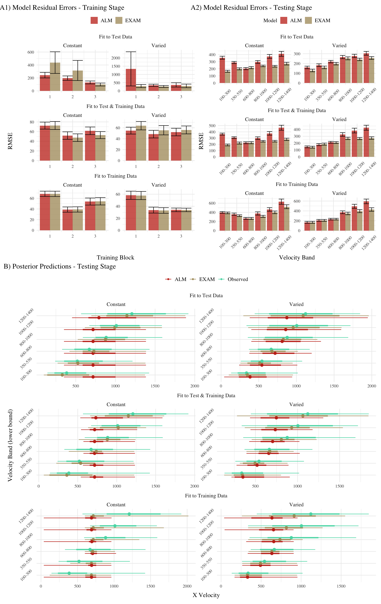

Table 1: Mean model errors predicting testing data, aggregated over all participants and velocity bands. Note that Fit Method refers to how model parameters were optimized, while error values reflect mean absolute error for the 6 testing bands
Fit_Method
Model
Constant
Varied
Fit to Test Data
ALM
324.7
243.3
EXAM
222.3
207.7
Fit to Test & Training Data
ALM
343.9
281.4
EXAM
237.4
225.2
Fit to Training Data
ALM
406.5
342.2
EXAM
370.7
296.4
Code
##| layout: [[45,-5, 45], [100]]##| fig-subcap: ["Model Residuals - training data", "Model Residuals - testing data","Full posterior predictive distributions vs. observed data from participants."]train_resid<-pd_train|>group_by(id,condit,Model,Fit_Method, Block)|>summarise(y =mean(y), pred =mean(pred), error =y-pred)|>ggplot(aes(x =Block, y =abs(error), fill=Model))+stat_bar+ggh4x::facet_nested_wrap(rename_fm(Fit_Method)~condit, scales="free",ncol=2)+scale_fill_manual(values=wes_palette("AsteroidCity2"))+labs(title="Model Residual Errors - Training Stage", y="RMSE", x="Training Block")+theme(legend.title =element_blank(), legend.position="top")test_resid<-post_dat|>group_by(id,condit,x,Model,Fit_Method,rank)|>summarize(error=mean(abs(y-pred)),n=n())|>group_by(id,condit,x,Model,Fit_Method)|>summarize(error=mean(error))|>mutate(vbLab =factor(paste0(x,"-",x+200)))|>ggplot(aes(x =vbLab, y =abs(error), fill=Model))+stat_bar+scale_fill_manual(values=wes_palette("AsteroidCity2"))+ggh4x::facet_nested_wrap(rename_fm(Fit_Method)~condit, axes ="all",ncol=2,scale="free")+labs(title="Model Residual Errors - Testing Stage",y="RMSE", x="Velocity Band")+theme(axis.text.x =element_text(angle =45, hjust =0.5, vjust =0.5))group_pred<-post_dat_l|>mutate(vbLab =factor(paste0(x,"-",x+200),levels=levels(testAvg$vb)))|>ggplot(aes(x=val,y=vbLab,col=Resp))+stat_pointinterval(position=position_dodge(.5), alpha=.9)+scale_color_manual(values=wes_palette("AsteroidCity2"))+ggh4x::facet_nested_wrap(rename_fm(Fit_Method)~condit, axes ="all",ncol=2,scale="free")+labs(title="Posterior Predictions - Testing Stage",y="Velocity Band (lower bound)", x="X Velocity")+theme(legend.title=element_blank(),axis.text.y =element_text(angle =45, hjust =0.5, vjust =0.5))((train_resid|test_resid)/group_pred)+plot_layout(heights=c(1,1.5))&plot_annotation(tag_levels =list(c('A1','A2','B')),tag_suffix =') ')&theme(plot.tag.position =c(0, 1))

Figure 1: A) Model residuals for each combination of training condition, fit method, and model. Residuals reflect the difference between observed and predicted values. Lower values indicate better model fit. Note that y axes are scaled differently between facets. B) Full posterior predictive distributions vs. observed data from participants.Points represent median values, thicker intervals represent 66% credible intervals and thin intervals represent 95% credible intervals around the median.
Figure 2: Posterior Distributions of \(c\) and \(lr\) parameters. Points represent median values, thicker intervals represent 66% credible intervals and thin intervals represent 95% credible intervals around the median. Note that the y axes of the plots for the c parameter are scaled logarithmically.
Accounting for individual patterns
Code
# could compute best model for each posterior parameter - examine consistency# then I'd have an error bar for each subject in the model error diff. figuretid1<-post_dat|>group_by(id,condit,Model,Fit_Method,x)|>mutate(e2=abs(y-pred))|>summarise(y1=mean(y), pred1=mean(pred),mean_error=abs(y1-pred1))|>group_by(id,condit,Model,Fit_Method)|>summarise(mean_error=mean(mean_error))|>arrange(id,condit,Fit_Method)|>round_tibble(1)best_id<-tid1|>group_by(id,condit,Fit_Method)|>mutate(best=ifelse(mean_error==min(mean_error),1,0))lowest_error_model<-best_id%>%group_by(id, condit,Fit_Method)%>%summarise(Best_Model =Model[which.min(mean_error)], Lowest_error =min(mean_error), differential =min(mean_error)-max(mean_error))%>%ungroup()error_difference<-best_id%>%select(id, condit, Model,Fit_Method, mean_error)%>%pivot_wider(names_from =Model, values_from =c(mean_error))%>%mutate(Error_difference =(ALM-EXAM))full_comparison<-lowest_error_model|>left_join(error_difference, by=c("id","condit","Fit_Method"))|>group_by(condit,Fit_Method,Best_Model)|>mutate(nGrp=n(), model_rank =nGrp-rank(Error_difference))|>arrange(Fit_Method,-Error_difference)full_comparison|>filter(Fit_Method=="Test_Train")|>ungroup()|>mutate(id =reorder(id, Error_difference))%>%ggplot(aes(y=id,x=Error_difference,fill=Best_Model))+geom_col()+ggh4x::facet_grid2(~condit,axes="all",scales="free_y", independent ="y")+labs(fill="Best Model",x="Mean Model Error Difference (ALM - EXAM)",y="Participant")# full_comparison |> filter(Fit_Method=="Test_Train") |> # ungroup() |># mutate(id = reorder(id, Error_difference)) |># left_join(post_dat_avg |> filter(x==100) |> select(-x) |> ungroup(), by=c("id","condit")) |># ggplot(aes(y=id,x=c,fill=Best_Model))+# stat_pointinterval(position=position_dodge(.1))
Figure 3: Difference in model errors for each participant, with models fit to both train and test data. Positive values favor EXAM, while negative values favor ALM.